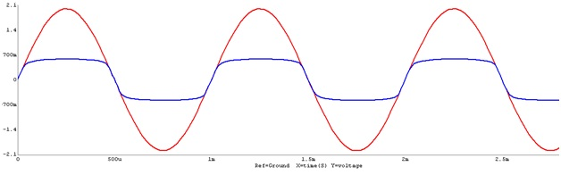

To design and study a Diode Limiter.
Introduction
DA diode limiter is an electronic circuit designed to clip or limit an alternating current (AC) supply voltage or an audio signal to a preset value. This is typically necessary where the supply voltage is larger than needed or powerful audio signals require compression to prevent overloads. Diode limiter circuits achieve this clipping function by placing one or two Zener diodes in parallel with the supply or signal. A single diode will only clip one half of the wave form while a pair of diodes will clip both negative and positive parts of the cycle. Accurate limiting is possible due to the known voltage limiting characteristics of different Zener diodes.
|  |